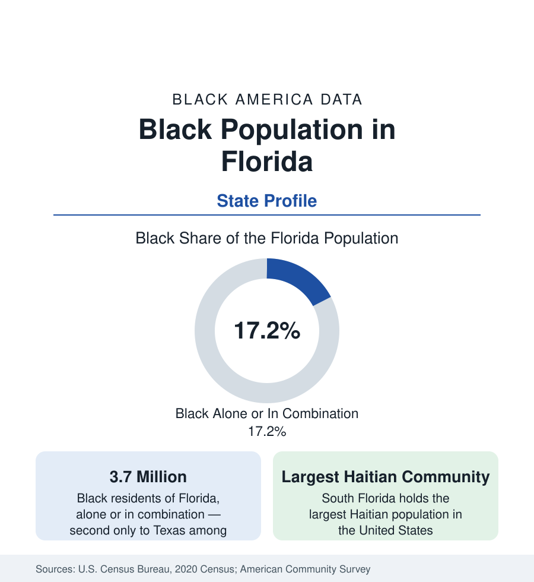

Black Census
Black Population in Florida: The Second-Largest State Total
About 3.7 million Black Floridians — the second-largest state Black population — span Jacksonville, Orlando, Tampa, and a South Florida corridor with America's largest Haitian community.

Florida holds the second-largest Black population of any state. The decennial census counted about 3.7 million Black Floridians — Black alone or in combination — roughly 17 percent of the state's population, with Black alone at about 3.2 million, or 15 percent. Unlike the other large Black states in this series, Florida has no single dominant Black metropolis; its population is distributed across four major metropolitan regions and a historically Black rural north, and it includes the largest Haitian community in the United States. This article profiles the population in the census data.
A State of Several Black Floridas
The distribution begins in the north. Jacksonville, the state's largest city by population within its consolidated city-county, is roughly 30 percent Black and anchors the northeast. Rural North Florida and the Panhandle — the state's plantation belt in the nineteenth century — include counties such as Gadsden, the only Florida county with a Black majority population, where shares run far above the state figure. Central Florida's Orlando and Tampa Bay metros each hold Black populations in the several hundred thousands, suburban in character and fast-growing. South Florida holds the state's largest concentration: Miami-Dade, Broward, and Palm Beach counties together count well over a million Black residents, split between long-established African American communities and the Caribbean diaspora.
South Florida and the Caribbean
Miami's historic Black geography — Overtown, once the center of Black Miami, and Liberty City — dates to the city's founding era, when Black workers built and serviced the new resort economy while confined by law and custom to designated districts. Layered over that foundation since the 1970s is the Caribbean migration that makes South Florida demographically unique in this reference: the largest Haitian population in the United States, centered in Miami's Little Haiti and across Broward County; one of the largest Jamaican populations; and substantial Bahamian, Trinidadian, and other Caribbean communities. In Miami-Dade County, a large share of the Black population is foreign-born — a composition closer to New York's than to any Southern state's, and the reason Florida's Black data require the birthplace breakdowns used throughout this section.
Roots and Growth
Black Florida's roots run from Spanish Florida — where free Black settlers founded Fort Mose in the eighteenth century, the first legally sanctioned free Black town in what became the United States — through a plantation economy built on enslaved labor, to the turpentine and railroad towns of the Jim Crow era and the Great Migration, which for Floridians often meant movement within the South as much as to the North. Modern growth is rapid and dual-sourced: domestic migration brings Black households from New York, Georgia, and the Caribbean-facing diaspora to Orlando, Tampa, and Jacksonville's suburbs, while international migration continues to expand South Florida. Florida's Black population is, by the estimates program's accounting, among the fastest-growing of any large state's.
Composition
The survey data describe wide internal variation. South Florida's Black population is the state's most immigrant and linguistically diverse — Haitian Creole and French are household languages for a large share — with attainment and income profiles shaped by that composition. The Orlando and Tampa metros show the suburban, comparatively middle-income profile of the new Southern metros. Jacksonville's Black population is predominantly native-born with deep local roots. Bethune-Cookman, Florida A&M in Tallahassee — among the largest and highest-ranked of the public HBCUs — Florida Memorial, and Edward Waters anchor the state's Black higher-education infrastructure.
Reading the Florida Numbers
Florida is the profile that most resists a single summary statistic. Its state average blends a rural Black Belt county structure in the north, two growth metros in the center, and a Caribbean metropolis in the south — three demographic regimes in one state total. The figures should always be read at the county or metro level, with the birthplace split applied in the south. What the state total does convey, at 3.7 million and second in the nation, is the scale that makes Florida — with Texas and Georgia — one of the three states where the future of Black America's numbers will principally be decided.
The county profiles that accompany this state account — Miami-Dade, Broward, Duval, Orange, and Hillsborough among them — carry the local detail, and the city profiles of Jacksonville, Orlando, Tampa, and Miami in the cities section complete the picture.
More in Black Census
The Black Population of the United States: Size, Definitions, and Distribution
The Black population of the United States totals 52.8 million — 15.4 percent of the nation. How the Census Bureau defines and counts the population, and where it lives.
Black Median Household Income in the United States
Black median household income stands at $56,490 in the Census Bureau's annual income report — how the figure is measured, how it compares, and what drives it.
The Black Poverty Rate: Levels, Children, and the Long Trend
The official Black poverty rate is 17.1 percent — against 11.1 percent nationally and 7.7 percent for non-Hispanic White Americans. How poverty is measured and what the data show.
Source: U.S. Census Bureau, 2020 Census; American Community Survey; Population Estimates Program.